On Calamity at Highstreet we wanted enemies to pick up light as they moved past light sources, and we wanted it in a toon style: stepped stripes of light sliding across them, not a smooth gradient. The first version did the obvious thing. Every pixel looped over every light, worked out how much each one reached it, and added it up. It looked like what we wanted, but it was too slow, so it never got past proof of concept. The team moved to voxel lighting instead, which I wrote about in A Voxel Light Baker for Streamed VR Scenes.
The problem stayed with me though. Most of the time, most lights don't touch most of the screen. A projectile's glow lights a small patch around it, and the rest of the frame is paying for a loop that adds nothing. So in my own time I built a small prototype to test a simple question: what if the CPU did a cheap, coarse pass first and told every part of the screen which lights it actually needs? I'm calling it Screen-Space Light Occupancy. It's a side project, it's Unity's Built-in pipeline, and it's a prototype, so read everything below in that spirit.
The idea in one sentence
Split the screen into a coarse grid, work out on the CPU which lights touch each cell, store that as one small bitmask per cell, and let the pixel shader light itself only with the lights whose bits are set.
That's the whole thing. The rest of this post is how each part works, why I think it should help, where it falls apart, and what I would do next.
How it works
There are two pieces. A C# component, ScreenOcupancyScanner, runs on the CPU. A shader, Custom/OccupancyLit, runs on every pixel.
The scanner collects the point and spot lights in the scene, up to Max Lights (8 in my scene), and packs their position, range, colour, intensity and spot
direction into a buffer the shader can read. Then it lays a grid over the screen.
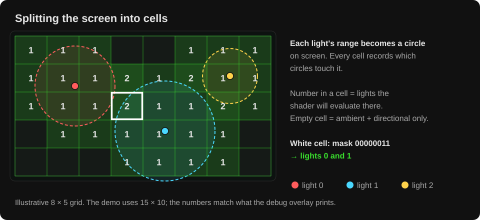
For every cell and every light, the scanner asks one question: could this light reach anything inside this cell? If yes, it sets that light's bit in the
cell's mask. With 8 lights that's 8 bits, so one byte of information per cell. (In the prototype each mask is stored as a full int, so
there's room to pack it tighter later.)
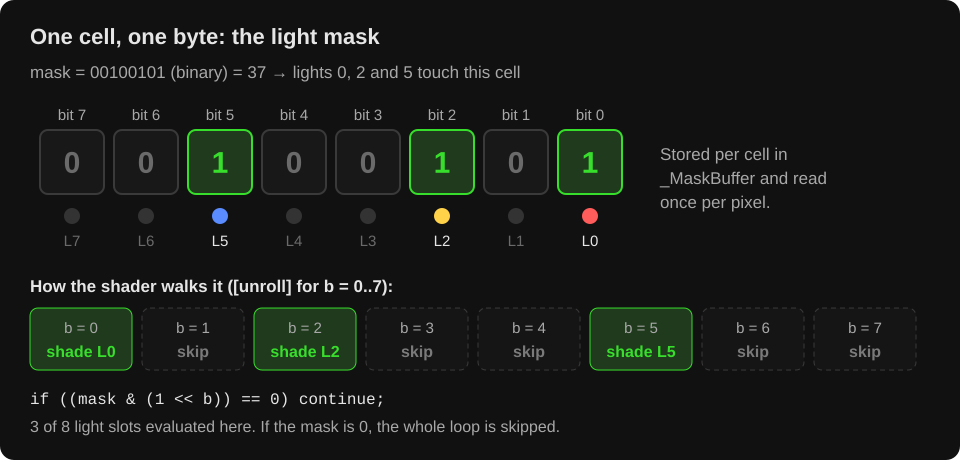
The two halves run at very different rates. The scan only runs every Scan Interval, 0.1 seconds in my scene, and uploads the masks to the GPU. The shader runs every frame for every pixel, and its extra work is tiny: turn the pixel's screen position into a cell, read one integer, and loop over the set bits.
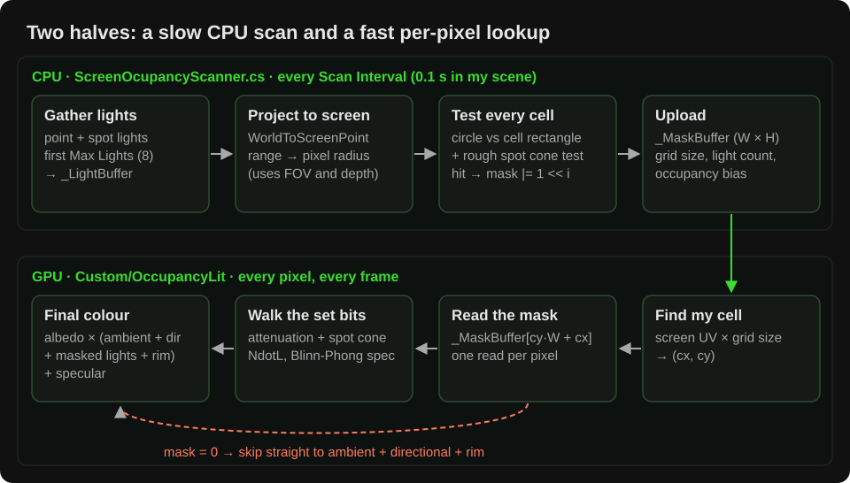
The test itself is cheap. The scanner projects the light's centre to the screen with WorldToScreenPoint, turns the light's range into a radius in
pixels using the camera's field of view and the light's depth, and then checks that circle against the cell's rectangle with a closest-point test. Spot lights
get an extra rough cone check, so a spot pointing away from a cell doesn't flag it.
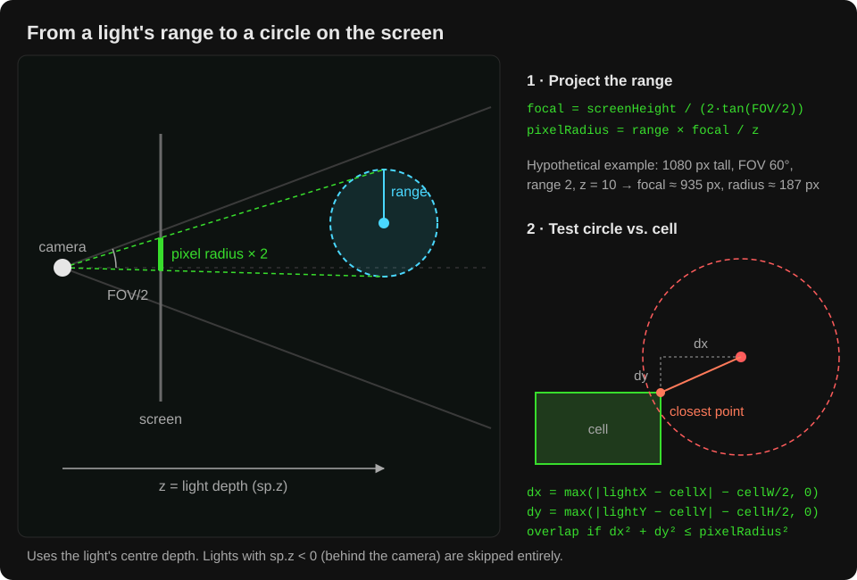
Here’s that test as it is in the prototype:
private bool Overlaps(Camera cam, Vector2 cellCenter, float cellW, float cellH, LightData light)
{
Vector3 sp = cam.WorldToScreenPoint(light.position);
if (sp.z < 0f) return false; // light centre behind the camera
// the light's range as a radius in pixels, at the light's own depth
float pixelRadius = light.range * (Screen.height / (2f * Mathf.Tan(cam.fieldOfView * 0.5f * Mathf.Deg2Rad)))
/ Mathf.Max(sp.z, 0.01f);
// closest point on the cell rectangle to the light's screen position
float dx = Mathf.Max(Mathf.Abs(sp.x - cellCenter.x) - cellW * 0.5f, 0f);
float dy = Mathf.Max(Mathf.Abs(sp.y - cellCenter.y) - cellH * 0.5f, 0f);
if ((dx * dx + dy * dy) > pixelRadius * pixelRadius) return false;
// extra cone test for spots (approximate)
if (light.type > 0.5f)
{
Vector3 toCell = cam.ScreenToWorldPoint(new Vector3(cellCenter.x, cellCenter.y, sp.z)) - light.position;
if (Vector3.Dot(toCell.normalized, light.direction) < light.cosAngle * 0.85f)
return false;
}
return true;
}On the shader side, the directional light is handled outside the mask, always on, driven from the material. Then the pixel finds its cell and walks the mask:
int cx = clamp((int)(screenUV.x * _GridWidth), 0, _GridWidth - 1);
int cy = clamp((int)(screenUV.y * _GridHeight), 0, _GridHeight - 1);
int mask = _MaskBuffer[cy * _GridWidth + cx];
if (mask != 0)
{
[unroll]
for (int b = 0; b < 8; b++)
{
[branch]
if ((mask & (1 << b)) == 0) continue;
LightData L = _LightBuffer[b];
// ... distance falloff, spot cone, N.L, Blinn-Phong specular
half atten = saturate(1.0 - dist / max(L.range * _OccupancyBias, 0.001));
atten *= atten;
// ...
}
}
One detail in there matters later: the falloff. The scanner tests against the light's full range, but the shader fades the light to zero at
range × Occupancy Bias. With a bias below 1 the light's visible reach is smaller than the circle the CPU tested, which gives a bit of
margin. I'll come back to why that margin isn't always enough.
Why it should help, in theory
I don't have profiler numbers for this yet, so everything in this section is reasoning about expected behaviour, not measurements. Profiling it on device is on the list at the end.
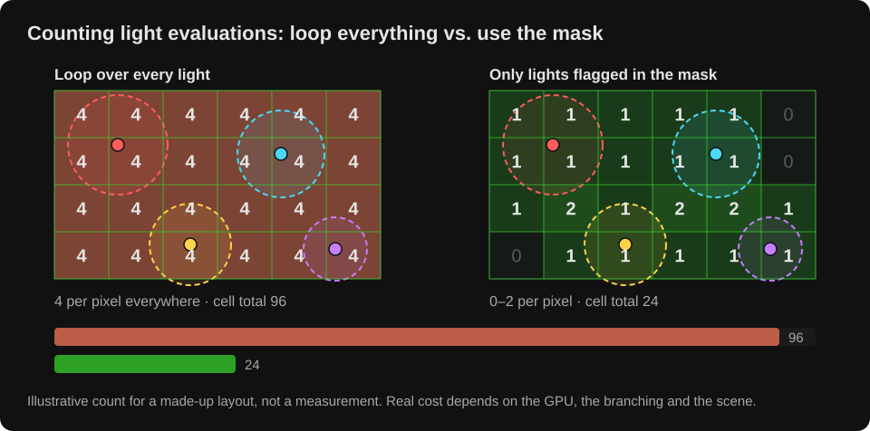
The first reason is simply less work. A pixel that only one light can reach does one light's worth of maths instead of eight, and a pixel that no light reaches skips the loop entirely.
The second reason is where the branching happens. GPUs run pixels in groups, and a branch is cheapest when every pixel in the group goes the same way. Because the mask belongs to a cell, every pixel inside a cell takes exactly the same path through the loop. Only the groups that straddle a cell border can diverge. That kind of coherent, screen-local branching is what I'd expect tile-based mobile GPUs, the kind inside standalone VR headsets, to handle well.
The third is that the data is tiny. At 15 × 10 cells the mask buffer is 150 integers, 600 bytes, and the light buffer is 8 small structs. Uploading that ten times a second is nothing compared to a texture.
There are real costs too, and I want to be straight about them:
- Branches aren’t free. The loop is unrolled with a
[branch]per bit. When most bits are set, you pay for the checks and the lights. - Dense masks shrink the win. If every light overlaps every cell, the mask is
11111111everywhere and you’re back to the naive loop plus a buffer read. - CPU cost grows with cells × lights. Every scan runs the overlap test for every cell and every light, and it also calls
FindObjectsByTypeto collect the lights. A finer grid or more lights means more CPU work. - The scan lags. Masks only update every Scan Interval. In between, a moving light or a moving camera can leave a light outside the cells it now covers, so lighting can pop or get cut off until the next scan.
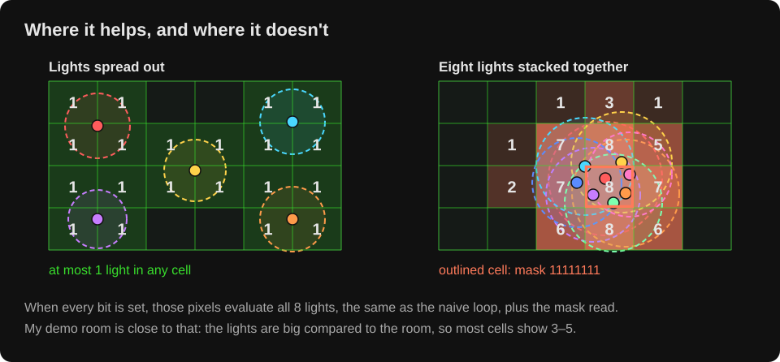
The demo
My test scene is a small room corner: checker-tiled walls, a wood-plank ceiling, a shiny tiled floor, and a couple of bumpy blobs, lit by six moving point lights: red, green, yellow, cyan and two blues. The lights are big compared to the room, so this is closer to a stress test than a best case.
The numbers in the overlay are the count of set bits in each cell's mask, in other words how many lights the shader actually evaluates there. The overlay also makes busy cells easier to spot: the text gets bigger and brighter as the count goes up. In this scene most cells sit somewhere between 1 and 5, a lot of them at 3 to 5, because the lights are large and the room is small.
Grid size is the main trade-off. Bigger cells are cheaper for the scanner but each one is more likely to overlap more lights, so pixels do more work. Smaller cells are tighter but the CPU cost goes up with every cell you add.
The settings
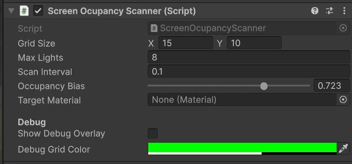
- Grid Size is the number of cells across and down. 15 × 10 in the main clip.
- Max Lights caps how many point and spot lights go into the buffer. The shader loop is written for 8, one per bit.
- Scan Interval is how often, in seconds, the scanner rebuilds the masks. 0.1 here, so ten times a second.
- Occupancy Bias scales the falloff radius in the shader: the light fades to zero at
range × bias. At 0.723 the visible reach is a bit smaller than the range the CPU tests against. - Target Material is optional. The buffers are set as globals anyway; this also binds them directly to one material.
- Show Debug Overlay and Debug Grid Color draw the grid and the per-cell counts you see in the first two clips.

The material is deliberately simple. An albedo and a normal map with a strength slider, a flat ambient term, Blinn-Phong specular with a colour, power and intensity, and a rim term with its own power and intensity. There's also a directional light set on the material itself, with a colour, intensity and direction. It isn't part of the mask at all. It lights every pixel, so even a cell with no point lights still has shape.
Toon Steps is the setting that goes back to the Highstreet brief. When it's above zero, N·L is snapped into that many bands before it's used, for the directional light and every masked light. Specular stays smooth. At 0 it's off, which is how it's set in these clips.
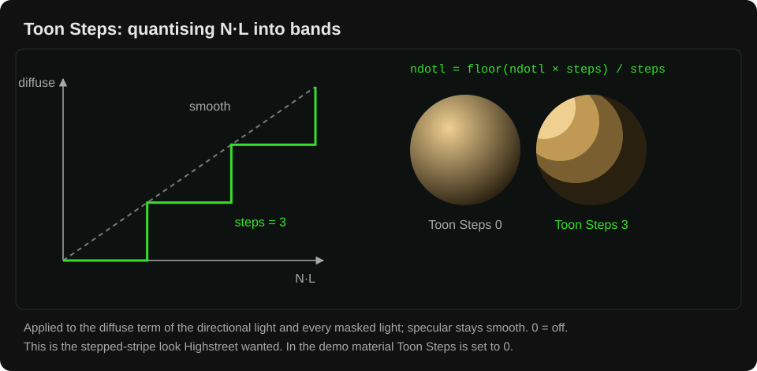
floor(ndotl × steps) / steps. Three steps turns a smooth falloff into the stepped stripes we wanted on enemies.So the contoured, slightly banded look in the highlights isn't the toon steps. I think it mostly comes from the strong normal map (Normal Scale 1.49) combined with a fairly tight specular (Spec Power 60.6), with some help from video compression.
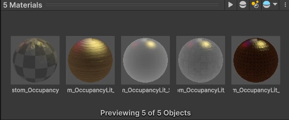
The scene uses five variants of the same material: a checker, a brown and gold striped one, a frosted grey, a plain light grey, and a dark red-brown with a dotted pattern. Same shader, same light loop, just different textures and values.
The cut-off problem
Watch the first clip around the two-second mark and you'll see the prototype's most visible flaw. The green light's highlight on the right wall stops dead at a vertical cell line, as if someone cut it with a knife.
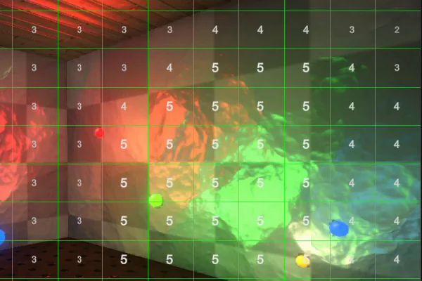
Here's what I believe is going on. The scanner sizes each light's circle at the light's own depth, sp.z. A surface that's closer to the camera
than the light, but still inside its range, takes up more of the screen than that circle allows for. So the pixels on that surface can be lit by the light
while sitting in a cell the scanner decided the light doesn't touch. The shader never evaluates the light there, and the lighting stops at the cell edge.
The Occupancy Bias margin helps a little, but it can't cover a surface that's much nearer than the light.
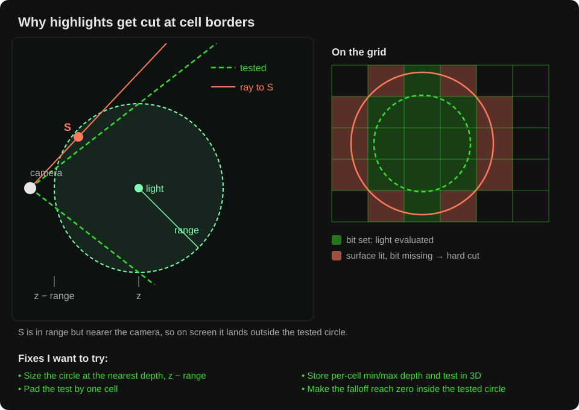
These are the fixes I want to try:
- Size the circle at the nearest depth. Use
sp.z − range, the front of the light’s sphere, instead of its centre. That’s a conservative projection of the bounding sphere, so it can only over-include, never miss. - Pad by one cell. Crude, but cheap, and it hides most of the slicing.
- Per-cell min/max depth. If each cell knew the depth range of what’s actually in it, the test could be done properly in 3D.
- Soften the falloff. Make the attenuation reach zero inside the radius that was tested, so there’s nothing left to cut.
Two smaller things to know. A light whose centre is behind the camera (sp.z < 0) is skipped completely, even if its range reaches in front.
And there's no priority when there are more lights than slots: the first ones found are the ones that get used.
Where this sits next to Forward+ and clustered shading
None of this is a new idea, and I don't want to pretend it is. It's a close cousin of tiled forward shading, often called Forward+, where a compute shader splits the screen into tiles, usually uses the depth buffer to find each tile's depth range, and builds a list of light indices per tile. Clustered shading goes further and slices the view into depth slices as well, so a light only counts in the 3D cells it actually reaches. Unity's URP has its own Forward+ path.
What I built is a simpler, smaller variant of the same family. It runs on the CPU instead of in a compute shader, it doesn't use depth at all yet, and instead of a light list it uses a fixed bitmask for a small fixed number of lights. That simplicity is the point: it's easy to read, easy to drop into a Built-in project with a custom shader, and suited to the case of a handful of dynamic lights. It's also why it has the cut-off problem above, which tiled and clustered methods solve with depth.
What it’s good for, and what it isn’t
Where I think it fits:
- VR and mobile, where every bit of per-pixel work counts.
- Stylised looks, like the toon stripes this started with, where you want lighting you control rather than physically accurate lighting.
- A few dynamic lights that move around: projectiles, enemy glows, muzzle flashes and other VFX lights.
Where it doesn’t:
- Lots of lights. Eight bits means eight lights, and the CPU test grows with every one.
- Shadows. There aren’t any from the masked lights.
- PBR accuracy. It’s Blinn-Phong with a simple falloff, not physically based shading.
- Fast cameras with a long scan interval. The masks go stale and lighting pops.
- Lights that cover the whole screen. Every cell gets the bit, so there’s nothing to save.
Next steps
If I pick this up again, this is the list, roughly in order of how much I want each one:
- Move the scan to a compute shader, so the CPU cost goes away and the scan can afford to run more often.
- Per-cell min/max depth, which fixes the cut-off properly and makes the test tighter.
- Scan every frame, or reproject last frame’s masks with the camera motion, to get rid of the lag and popping.
- Shadows from the previous frame’s depth, ray-marched in screen space towards each masked light (sketch below).
- A URP port, since that’s where most mobile and VR Unity projects are now.
- Single-pass instanced VR, so both eyes share the scan and read the right cell.
- Byte packing, storing four masks per
int, plus a 16 or 32-light variant using a fulluint. - Hook up SSAO. The sampling is already stubbed out in the shader, it just needs turning on.
- Profile on a Quest / Adreno GPU, to find out whether the theory in this post holds up on real hardware.
- The cut-off fixes from above: nearest-depth radius, one-cell padding and a softer falloff.
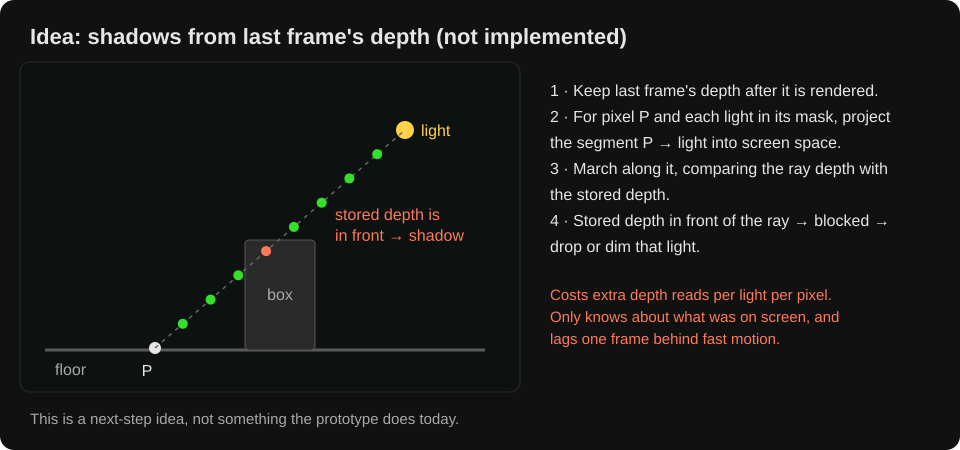
The shadow idea is the one I'm most curious about. Keep the depth buffer from the previous frame. For each pixel and each light in its mask, march along the line from the pixel towards the light in screen space and compare against the stored depth. If something on screen is in front of the ray, that light is blocked. It would only know about things that were on screen, it would be a frame behind fast motion, and it costs extra depth reads per light, but for stylised VFX lights that might be a good trade.
Wrapping up
This started as a problem on Highstreet that we parked in favour of voxel lighting, and turned into a side project I kept coming back to. The core is small: a grid, a byte per cell, and a loop that skips the lights that can't matter. It works, it looks right most of the time, and it has one obvious flaw I understand and know how to attack. What it doesn't have yet is numbers from real hardware.
It's a personal project, so I'll revisit it when I have time, starting with the depth-aware test and a proper profile on a headset. If you've built something similar, or you know where this breaks that I haven't spotted, I'd like to hear about it.